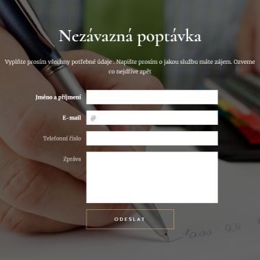
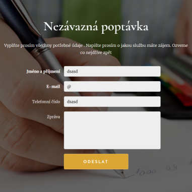
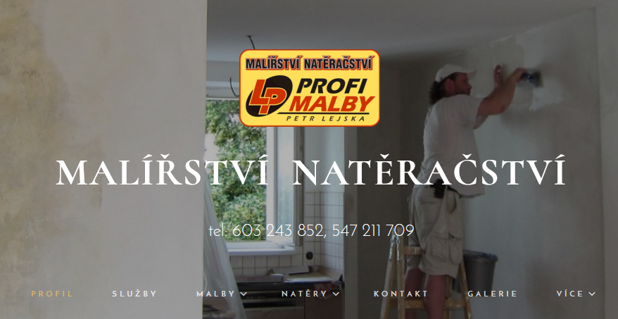
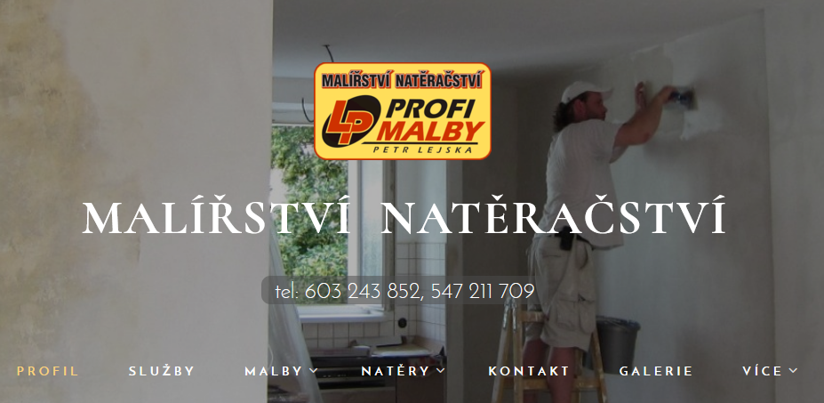
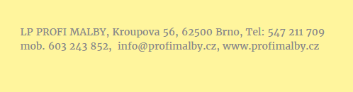
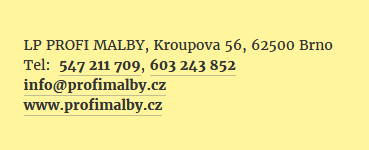
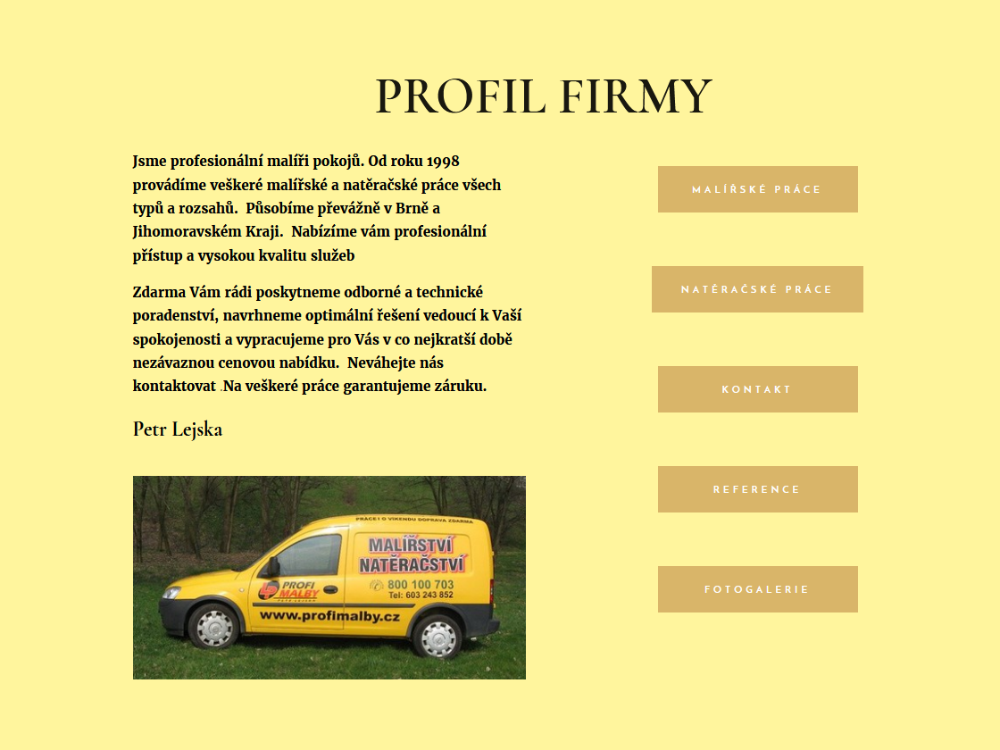
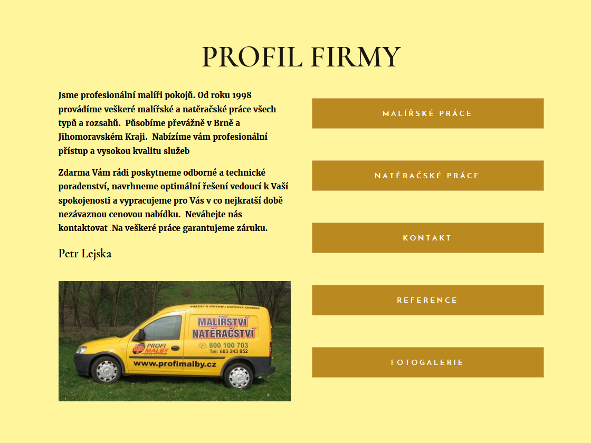
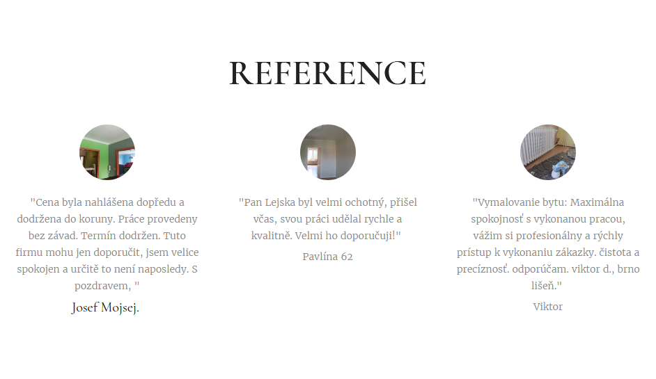
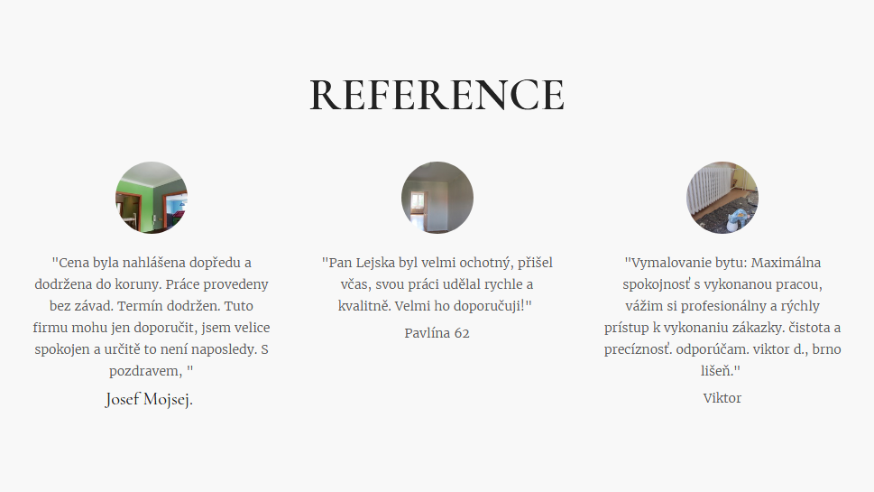

Nejlépe fungují produkty, které jsou dělané na míru. Oblek, který máte šitý přímo pro sebe padne jako
ulitý. Při nákupu konfekce jste nuceni občas udělat tu a tam kompromis. Ale to, že vám krejčí nešije
celý oblek neznamená, že vám nemůže pomoci s pár detaily.
Použitím webové šablony razantně klesají náklady na výrobu webových stránek. To je
fakt.
Její tvůrce ale nemůže vyladit to, co tam přidáte a vložíte vy sami. A po naplnění šablony reálným
obsahem je vhodné vše znovu projít a udělat případné úpravy. Stačí několik málo úpravy a uživatelův
dojem bude mnohem lepší.
A zde pár ukázek, jak drobné úpravy zvyšují čitelnost nebo viditelnost a tím i celkovou použitelnost:
Zvýraznění ovládacího prvku formuláře, zaoblení hran:


Zvýraznění navigačních odkazů a zlepšení čitelnosti tel. kontaktu


Zlepšení přehlednosti kontaktních údajů v patičce


Zlepšení čitelnosti textu odkazů


Zmírnění jasu pozadí a použití tmavší barvy textu referencí

